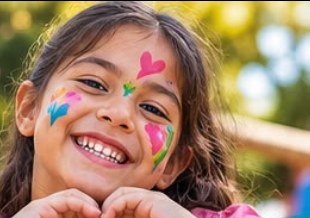
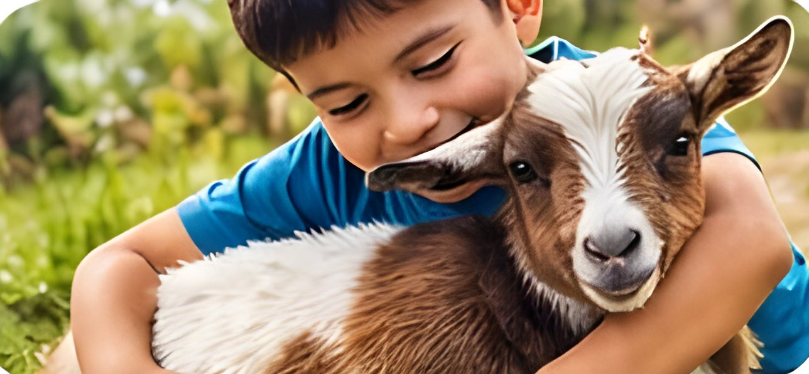

Carla
Directora Fundadora y Presidenta
Orientación y apoyo a familias, coordinación y gestión, información y comunicación, y trabajo en equipo con profesionales y la comunidad.
directoracarlafundacioncea@gmail.comTrabajamos por la inclusión y calidad de vida de niños, niñas, adolescentes, jóvenes y adultos con o sin diagnóstico, junto a sus familias.


Somos una fundación comunitaria sin fines de lucro de La Serena que acompaña a personas autistas, con otras condiciones del neurodesarrollo, y a sus familias, durante todo el ciclo vital. Nacimos de la mano de 3 directoras cuidadoras de personas neurodivergentes.
Decidimos formar una fundación que no excluya a ninguna persona que requiera apoyo social, emocional y/o terapéutico.
Nos constituimos el 30 de noviembre de 2020
como Fundación Familia C.E.A. Chile.
Brindar apoyo, terapias y espacios de inclusión para mejorar la calidad de vida de nuestros usuarios y familias, con un enfoque respetuoso, humano y neuroafirmativo.
Mejorar la calidad de vida de niños/as, jóvenes y adultos con discapacidades, ya sea intelectual, sensorial, física y/o con necesidades educativas especiales en general.
Convertirnos en una fundación residencial y terapéutica de salud mental familiar que funcione las 24 horas del día.
No excluimos a ninguna persona que requiera apoyo social, emocional y/o terapéutico.
Autismo, TDAH y otras condiciones del neurodesarrollo.
Acompañamos también a las familias y sus entornos.
No necesitas un diagnóstico para recibir apoyo.
Infancia, adolescencia, juventud y adultez.
Contamos con profesionales especializados en las siguientes áreas. Toca cada una para conocer cómo te acompañan.
Un equipo que suma vidas: cada llamada atendida, cada familia guiada y cada sesión también es inclusión.
Directora Fundadora y Presidenta
Orientación y apoyo a familias, coordinación y gestión, información y comunicación, y trabajo en equipo con profesionales y la comunidad.
directoracarlafundacioncea@gmail.comTrabajadora Social · Gestión social, redes y vinculación
Busca recursos y donaciones, capta padrinos, madrinas y socios, postula a fondos, crea redes con instituciones, vincula a nuevas familias y coordina el voluntariado.
Relacionadora Pública · Directora de Gestión Territorial y Vinculación
Representa y difunde la labor de la Fundación, genera alianzas y convenios, vincula con autoridades e instituciones y promueve su presencia en medios.
relacionadorapublicacea@gmail.comEducador Diferencial
Recibe y acompaña a todo aquel que requiera apoyo, trabajando desde sus capacidades y necesidades particulares con respeto, compromiso y vocación.
Cupos de terapias en todo el ciclo vital, con valores accesibles para las familias.
| Test | Valor |
|---|---|
| ADOS-2Permite medir nivel de autismo | $70.000 |
| ADOS-2Familias del tramo 40% del Registro Social de Hogares | $55.000 |
| ADI-RComplemento del ADOS-2 | $78.000 |
| Psicometría WISC-VMenores de 16 años | $80.000 |
| Psicometría WAIS-VMayores de 16 años | $80.000 |
¿Dudas sobre qué evaluación necesitas? Consúltanos por WhatsApp.
Espacios para compartir, aprender y disfrutar en comunidad junto a las familias.
Contamos con una granja terapéutica y talleres que entregan herramientas prácticas a las personas y sus familias para enfrentar los desafíos del día a día. Aprender, incluir, cuidar y compartir.
Recibimos a personas, familias, colegios e instituciones con una experiencia segura, acogedora, inclusiva y educativa:
Pequeños seres que también ayudan a regular, acompañar y enseñar. Aportan calma, estimulación sensorial predecible y bienestar emocional:
Para pertenecer a nuestra Fundación, debes presentar los siguientes documentos:
Matrícula $10.000 (única) · Cuota mensual $5.000 por grupo familiar
Las niñas y niños no nacen con malicia. No discriminan, no se burlan, no humillan… hasta que alguien les enseña a hacerlo.
¡Hagamos niñas y niños de bien! Es tarea de todos.
Tu apoyo nos permite seguir transformando vidas.
Tu talento, tu tiempo y tus ganas hacen la diferencia: actividades, difusión, campañas, granja, comunicaciones y mucho más.
Sé directora o director de Gestión Territorial y Vinculación Regional y lleva la inclusión a tu ciudad, región o país.
Abrimos nuestras puertas a estudiantes que quieran aprender y crecer con nosotros.
Empresas, instituciones y organizaciones también pueden ser parte. Cada alianza puede convertirse en una nueva oportunidad para nuestras familias.
Cada persona aporta desde el respeto, la inclusión y el corazón:
Lo que más nos preguntan las familias.
No. Atendemos a personas con o sin diagnóstico. Si tienes un diagnóstico o antecedentes médicos, puedes presentarlos al momento de inscribirte.
Acompañamos a las personas durante todo el ciclo vital: infancia, adolescencia, juventud y adultez, junto a sus familias. La atención de neurología es desde los 14 años en adelante.
Las actividades comunitarias son gratuitas. Ver todos los valores.
Luego se completa la ficha de ingreso y se firma el convenio de afiliación.
Sí. Realizamos ADOS-2 y su complemento ADI-R, además de evaluaciones psicométricas WISC-V (menores de 16 años) y WAIS-V (mayores de 16 años). Ver valores de las evaluaciones.
Sí. Contamos con psicopedagogía, educación diferencial, educación parvularia y docentes que acompañan el aprendizaje en educación básica, media y superior: reforzamiento, hábitos de estudio y orientación educativa. Ver servicios.
Sí. Recibimos a personas, familias, colegios e instituciones en nuestra granja terapéutica, con un recorrido guiado e interacción supervisada con los animales. Agenda tu visita por WhatsApp.
No. Son prácticas complementarias de bienestar: no reemplazan tratamientos médicos, psicológicos ni otras atenciones de salud. Se realizan con consentimiento y, cuando corresponde, se orienta y deriva a otros profesionales.
Paseos, salidas pedagógicas, Fiesta del Día de la Niñez, Fiesta de Navidad, talleres grupales y socioeducativos, charlas, apoyo social, clases de psicomotricidad, celebraciones típicas y escuelas de verano e invierno.
Estamos en Los Carrera #134–136, La Serena Centro. Atendemos de lunes a sábado, de 09:00 a 13:00 y de 14:00 a 19:00 hrs. Los feriados permanecemos cerrados.
Puedes hacer una donación por transferencia, sumarte como voluntario/a, ser parte de nuestra red territorial, realizar tu práctica profesional con nosotros o, si representas a una empresa o institución, proponernos una alianza.
¿Tienes otra pregunta? Escríbenos por WhatsApp.
Escríbenos, llámanos o visítanos en La Serena.
Ajusta la página a tu comodidad. Recordaremos tu elección.